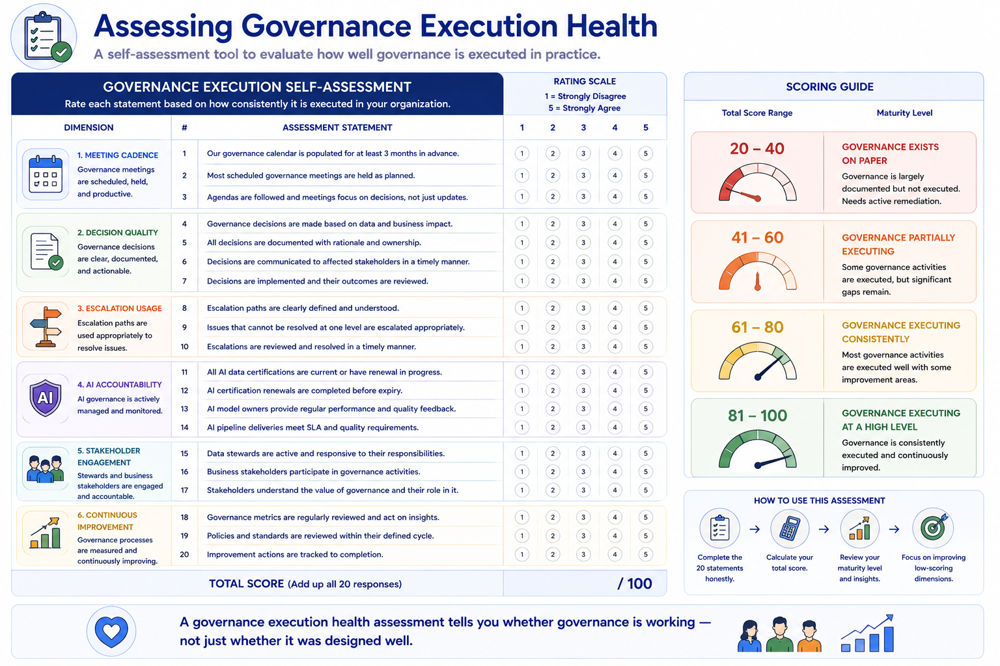
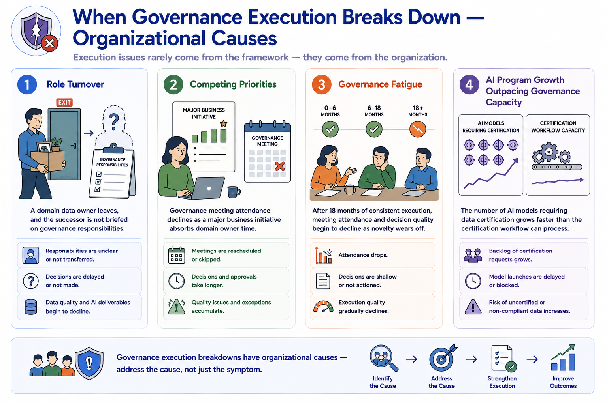
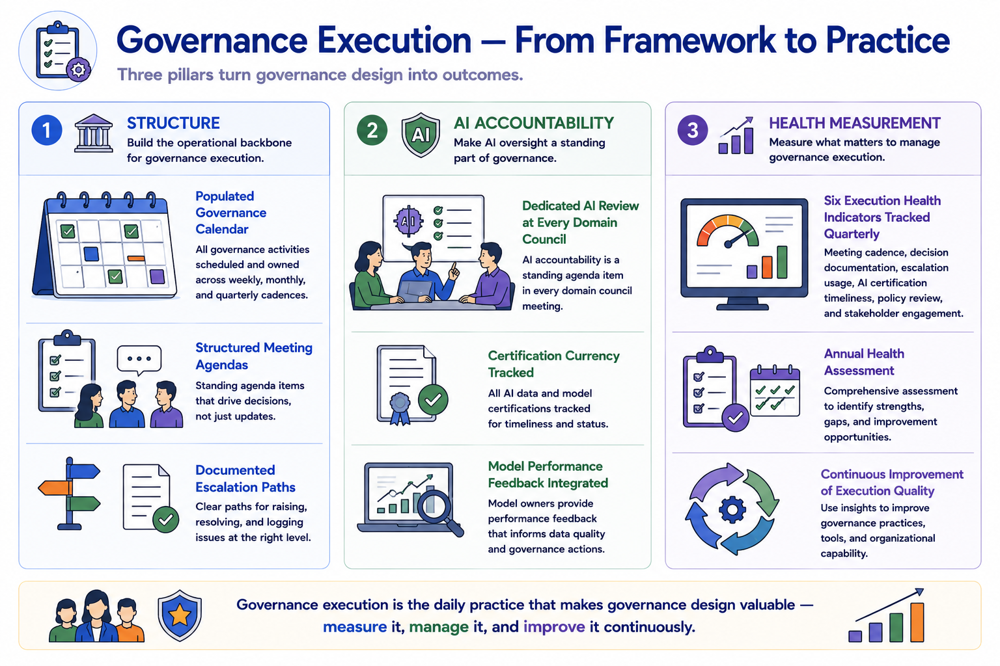

Governance Execution
Module support notes
The Governance Execution Health Assessment
A governance execution health assessment conducted six months after implementation completion and annually thereafter is one of the most useful operational investments an MDM program can make. It provides an evidence-based view of where governance is executing well and where it is breaking down — before the breakdown produces the quality degradation or AI reliability issues that would eventually force attention.
The assessment is most valuable when conducted by someone outside the immediate MDM operations team — either an internal audit function or an independent reviewer — because self-assessment tends to overestimate execution quality in areas where the team knows the standard but has accommodated deviations from it.
Tip
Use the governance execution health assessment not just to identify gaps but to celebrate progress. Teams that only hear about what isn't working develop governance fatigue faster than those that also see documented evidence of what is working well. A balanced assessment that names both execution strengths and improvement areas sustains stakeholder engagement far more effectively than a gap-focused audit report.

Governance Execution and Organizational Change
Governance execution breakdowns are almost always organizational rather than technical — they stem from role transitions that weren't managed, competing priorities that displaced governance commitments, governance fatigue that sets in after the initial implementation energy fades, or AI program growth that outpaced the governance capacity designed for a smaller number of AI use cases.
Identifying the specific organizational cause of an execution breakdown is the prerequisite for fixing it durably. Adding more governance documentation or policy reminders in response to a breakdown caused by governance fatigue will have no effect — and may accelerate the fatigue. The right responses are organizational: refreshing stakeholder engagement, reconnecting governance activities to visible AI outcomes, and building AI program growth into a capacity plan for governance operations.
Warning
Governance execution breakdowns have organizational causes — address the cause, not just the symptom. The four most common causes are: role turnover where a successor isn't briefed on governance responsibilities; competing priorities absorbing domain owner time; governance fatigue after 18 months of consistent execution; and AI program growth outpacing certification workflow capacity. Each requires a different organizational response — none of them is fixed by adding more policy documentation.

Governance execution is the daily practice that makes governance design valuable — it requires structure, AI accountability integration, and continuous health measurement to sustain over time.
